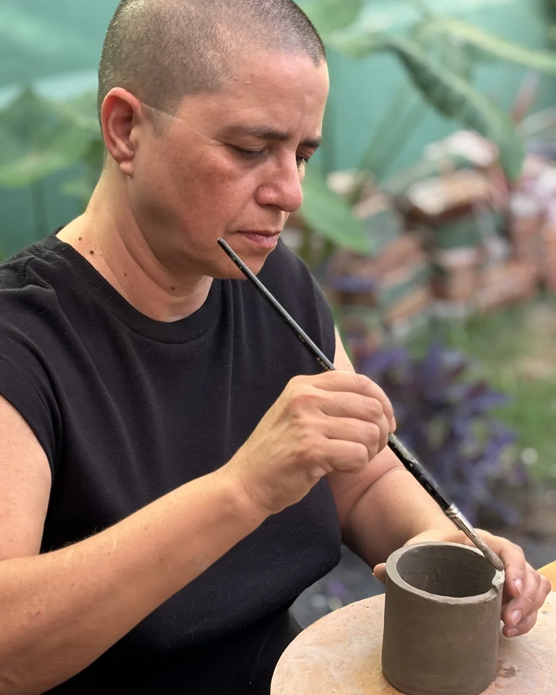

🎁 Leva o Kit da Terra 14h às 17h30Descoberta Aquarela em Cerâmica
📍 Studio Alice — Uberlândia/MG
Uma vivência dos fundamentos da pintura de aquarela em cerâmica. Uma tarde para desacelerar, experimentar cores e descobrir como pintar sobre peças cerâmicas.
R$350 por pessoa
Ver detalhes →